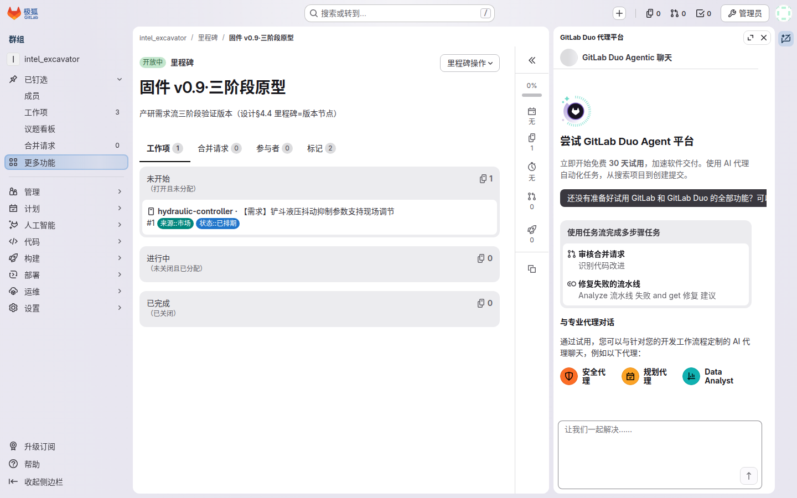
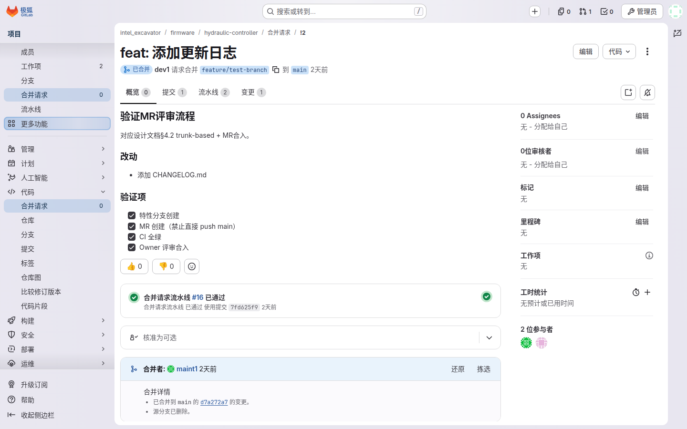
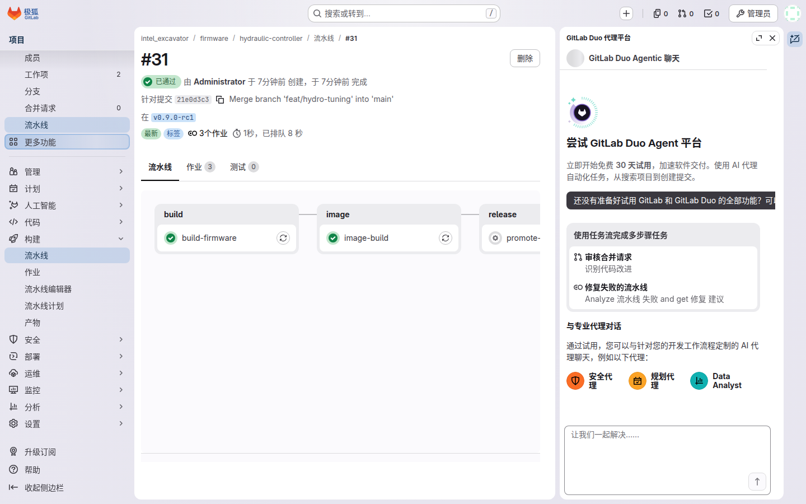
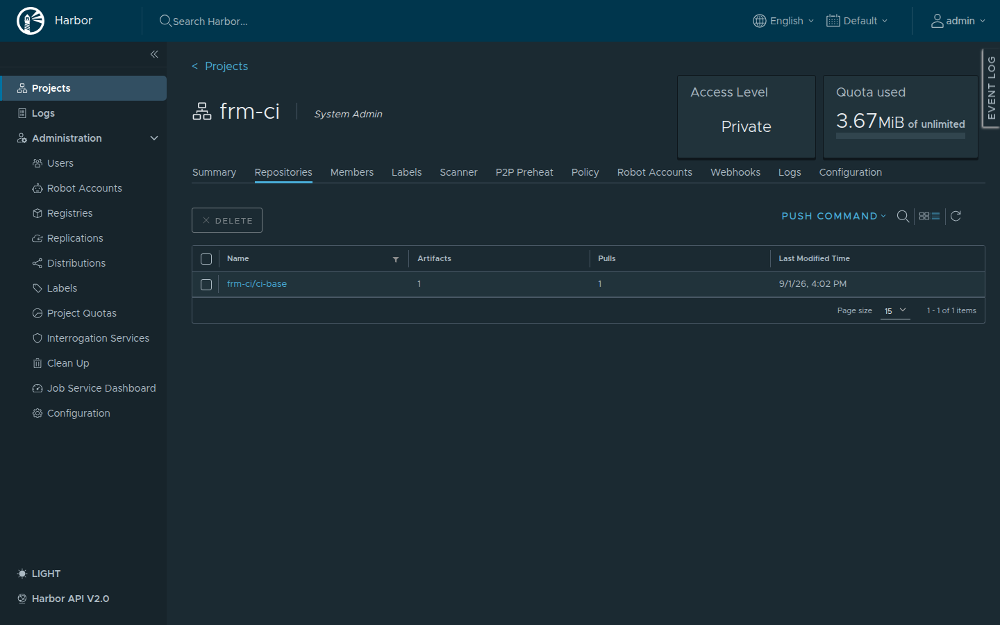

你是谁
你是这个仓库的 Owner，在 GitLab 里的角色是 Maintainer（40）：这个仓库的守门人和发布责任人（每仓库仅 1–2 人，§4.3）。Developer 把 MR 修到全绿后，等你评审、等你合入；什么时候打 tag、要不要放行晋升，由你拍板。代码进 main 的最后一道门、制品流向现场的第一个关口，都在你手上。
你能做什么 / 不能做什么
| 能 ✅ | 不能 ❌ |
|---|---|
| approve 并合入 MR | 改 platform 组的 ci-templates（平台组自己管） |
| 配保护分支、管成员 | 跳过评审合入自己的 MR（制度） |
| 打 tag、批准晋升、建 Release | 在本机编发布产物 |
典型任务流：分诊与排期（需求流）
三阶段起，你不只是代码守门人——你还是这个域的分诊人（§4.2）。提单人在受理台（excavator/intake）提的单，先到你手里过一道：3 个工作日内决定它的去向。
分诊：三选一
打开受理台（excavator/intake）的 Issues 列表，按 待受理 过滤——这些单等着你处理。对每张单做三件事之一：
- 移交——单属于你管的域？把它 move 到你的域仓库，评论与链接全保留。同时代打
来源::和状态::已排期标签（提单人是 Guest，没有打标权限，标签由你代打，§4.1）。 - 打回——验收标准空泛、信息不够？退回提单人补充，在评论里写明缺什么。
- 婉拒——重复提了、或超出本域范围？说明理由、关闭。
排期：拖里程碑
移交到域仓库的单默认进 已排期。排期 = 把单拖进版本里程碑（如"固件 v0.9"），进里程碑即排上日程。里程碑 = 版本节点，跨仓库生效（§4.4）。

合码前：核需求流 checklist
Developer 提 MR 时，描述里应该带着四项自查 checklist。你合码前除了看代码 diff 和 CI 绿，还要核这四项（§5.1）：
- ☑ 关联需求单号——写了
Closes #单号（默认路径：合入即自动关单）还是只引用#单号（需外部验收：合入后进待验证，你来手关） - ☑ 选定里程碑——这个版本要收的需求
- ☑ CI 全绿
- ☑ 自测通过
典型任务流：一次发布的全流程
评审 MR
MR 页切到 Changes 逐行看：批准记录在顶部，流水线状态在中部，合入信息在下方。有问题就在对应行内评论，Developer 修完会自动更新；看完没问题，点 Approve。

合入
点 Merge 按钮合入，main 流水线随即自动触发。
打 tag
main 流水线绿了、决定发版时，在本地打一个带说明的标注 tag 并推送：
$ git checkout main && git pull $ git tag -a v0.2.0-field -m "现场验证版" $ git push origin v0.2.0-field
等 tag 流水线
tag 推上去后自动触发 tag 流水线：先跑 build 产出制品，跑完后停在 promote-release 手动关卡（⏸ 等人按）。

手动批准晋升
确认 build 绿了，点 promote-release 的 ▶ Play，制品才从构建区晋升进发布区。
建 Release
左侧 Deploy → Releases → New release，选中刚打的 tag，把晋升出来的 .bin 与 manifest.json 附上——现场驻场同事就是从这个页面下载制品的。


核对追溯链
发完最后一眼：manifest.commit = main HEAD = tag commit = MR 合入 commit，四方一致才可放行（§6.3）。核对方法——Release 页 manifest 的 commit 字段 vs 仓库 main 页顶部 SHA。
二阶段多了两类产物，追溯链各自延伸：镜像核对 Harbor frm-ci 里的 tag→commit；模型权重核对 MinIO training-output 里 manifest 的 s3 指针→commit。三方各自能追到同一 commit，才算齐（§6.4）。
常见报错自救
$ git fetch && git checkout feat/xxx && git merge origin/main $ git push解决冲突后 push，MR 自动更新。
git push origin :refs/tags/vX.Y.Z + GitLab 页面删 tag；已对外发布的 tag 不删，追加 -fix 新 tag。
红线清单
延伸阅读
设计文档（docs/superpowers/specs/2026-08-31-excavator-code-management-design.md）：
- §6.3 制品晋升与追溯
- §4.3 权限
- §5.4 构建区
- §6.4 制品与镜像存储分工（三去向）
需求流设计（docs/superpowers/specs/2026-09-03-requirement-flow-design.md）：
- §4.2 分诊值班 / §4.4 版本节奏（排期与里程碑）
- §5.1 MR 关联与 checklist / §7.1 三无制度